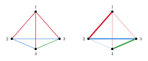
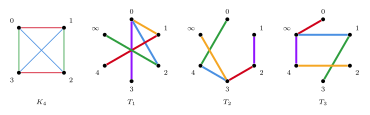
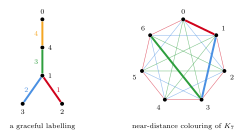
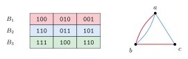
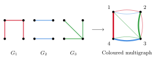

3 Rainbow spanning trees and bases
This section is about rainbow spanning trees and rainbow copies of given trees. In a properly coloured complete graph, a rainbow spanning tree always exists: the star at any vertex is one. So the main questions are how many edge-disjoint rainbow spanning trees there are, and which trees have rainbow copies. The second question is closely tied to graph labelling and to Ringel's tree packing conjecture.
3.1 Rainbow spanning trees in general graphs
In an arbitrary edge-coloured graph, Suzuki characterised when a rainbow spanning tree exists. Deleting all edges of $r$ colours from a connected graph must leave at most $r+1$ components, since a rainbow spanning tree loses at most $r$ edges. This necessary condition is also sufficient.
An edge-coloured connected graph $G$ on $n$ vertices has a rainbow spanning tree if and only if, for every $1\leq r\leq n-2$, deleting the edges of any $r$ colours leaves a graph with at most $r+1$ components.
A rainbow spanning tree is a common basis of two matroids on the edge set: the graphic matroid of $G$, and the partition matroid in which a set is independent if it has at most one edge of each colour. So Theorem 3.1 is a case of Edmonds' matroid intersection theorem, and a rainbow spanning tree can be found in polynomial time. We return to matroids in Section 3.6.
When the colouring has fewer than $n-1$ colours, a spanning tree cannot be rainbow, and the natural object is a forest using each colour exactly once. Mosallam and Zaslavsky [221] studied these total rainbow forests. Using a necessary and sufficient condition for their existence, they showed that there are very many minimal edge-coloured graphs without one. They ask for a description of all minimal obstructions, which they expect to be very difficult, and, more modestly, for a general construction that contains their known families [221]. Instead of one spanning tree one can also ask for few vertex-disjoint rainbow trees covering all vertices; for complete graphs coloured with a given number of colours, the minimum number needed was determined by Jin and Li [164].
An older result of this kind has a nice consequence. Graham and Pollak [145] studied a problem about addressing in telephone networks. In a loop-switching network, a message should be routed using addresses from which the distance between any two nodes can be read off, and this led them to ask how few complete bipartite graphs are needed to partition the edges of a graph. They showed that $K_n$ needs at least $n-1$ of them. Alon, Brualdi and Shader proved a rainbow statement that implies this.
If the edges of $K_n$ are coloured so that every colour class is a complete bipartite graph, then there is a rainbow spanning tree.
A rainbow spanning tree uses $n-1$ different colours. So a partition of $E(K_n)$ into complete bipartite graphs, viewed as a colouring, has at least $n-1$ parts, which is the Graham–Pollak theorem (Figure 9).

3.2 Decomposing properly coloured complete graphs
A spanning tree of $K_{2n}$ has $2n-1$ edges, and $K_{2n}$ has $n(2n-1)$ edges. So $K_{2n}$ contains at most $n$ edge-disjoint spanning trees, and $n$ of them decompose it. For optimal colourings of $K_{2n}$, which are $1$-factorisations, Brualdi and Hollingsworth conjectured that such a decomposition into rainbow trees exists.
For every $n\geq 3$, every optimal colouring of $K_{2n}$ decomposes into $n$ rainbow spanning trees.
The condition $n\geq 3$ is needed. The optimal colouring of $K_4$ is unique up to isomorphism, and its only rainbow spanning trees are the four stars. Any two stars in $K_4$ share an edge, so there are no two edge-disjoint rainbow spanning trees (Figure 10).
Conjecture 3.3 asks for a decomposition into rainbow trees of any shapes. Constantine asked whether the shapes can be made the same. This links the problem to the classical question of decomposing a complete graph into copies of one fixed graph, which we meet again in Ringel's conjecture (Section 3.5).
For every $n\geq 3$, every optimal colouring of $K_{2n}$ decomposes into $n$ isomorphic rainbow spanning trees.
The common tree cannot always be a Hamilton path. For $n$ a power of $2$, the colouring of $K_{2n}$ by $\mathbb{Z}_2^k$ in Section 2.2 has no rainbow Hamilton path at all, by an argument of Maamoun and Meyniel (Section 4). So the shape of the trees has to depend on the colouring, or be chosen cleverly.
Both conjectures are about optimal colourings, in which every colour class is a perfect matching. Kaneko, Kano and Suzuki asked what happens for an arbitrary proper colouring. Then there may be many more colours, which should make rainbow trees easier to find, but the colour classes can have very different sizes. They conjectured that the same number of trees still exists.
For every $n\geq 6$, every properly coloured $K_n$ contains $\lfloor n/2\rfloor$ edge-disjoint rainbow spanning trees.
For even $n$, the trees in Conjecture 3.5 decompose $K_n$. In particular, a colour with $n/2$ edges must appear in every tree, so there is no room for error. Suzuki [257] proposed a version without any condition on the colouring. For an arbitrary colouring of $K_{2n}$, a rainbow tree may not exist, so he asked for a decomposition into $n$ spanning trees each of which has roughly the same colour distribution as $K_{2n}$ itself, and he proved that a single such tree exists.

For a long time only a constant number of trees was known. Brualdi and Hollingsworth found $2$, Krussel, Marshall and Verrall found $3$, and Kaneko, Kano and Suzuki also found $3$ for all proper colourings. Fu, Lo, Perry and Rodger [127] gave an explicit construction of $\lfloor\sqrt{6n+9}/3\rfloor$ trees in an optimally coloured $K_{2n}$. Horn [155] gave the first linear bound, $\varepsilon n$ for some $\varepsilon>0$, for optimal colourings. For all proper colourings, Balogh, Liu and Montgomery [43] and, independently, Pokrovskiy and Sudakov [241] found linearly many trees. Pokrovskiy and Sudakov found $10^{-6}n$ edge-disjoint rainbow spanning trees which are moreover isomorphic: they are all copies of one spider, a star with some of its edges subdivided once.
Every properly coloured $K_n$ contains $(1-o(1))n/2$ edge-disjoint rainbow spanning trees.
This proves Conjectures 3.3 and 3.5 asymptotically. The remaining difficulty is the last $o(n)$ trees. For even $n$, an exact decomposition must use every edge of $K_n$, so there is no slack at all, and a near-decomposition cannot simply be completed. For optimal colourings, Glock, Kühn, Montgomery and Osthus overcame this using absorption, and they obtained isomorphic trees as well.
For every large $n$, every optimal colouring of $K_{2n}$ decomposes into $n$ isomorphic rainbow spanning trees.
Thus Conjectures 3.3 and 3.4 hold for large $n$, while Conjecture 3.5 is open. The method of Theorem 3.7 uses the fact that all colour classes of an optimal colouring are perfect matchings. For an arbitrary proper colouring the colour classes may have very different sizes, and this is where new ideas are needed. One natural intermediate step is to replace properness by a bound on the size of each colour class, which is the subject of the next subsection.
3.3 Bounded colourings and rainbow forests
The condition that the colouring is proper can be weakened to a bound on the size of each colour class. In a colouring of $K_n$ in which each colour has at most $n/2$ edges, Akbari and Alipour [16] found $2$ edge-disjoint rainbow spanning trees, and Carraher, Hartke and Horn [76] found $\lfloor n/(1000\log n)\rfloor$. Horn and Nelsen [156] extended this to general host graphs, under a condition involving the second-smallest eigenvalue of the normalised Laplacian. On the other hand, Pokrovskiy and Sudakov [241] showed that some bounded colourings of $K_n$ have no rainbow spanning spider at all, so an analogue of Constantine's conjecture for bounded colourings would need a different family of trees.
Glock, Kühn, Montgomery and Osthus [137] asked how many edge-disjoint rainbow spanning trees can be guaranteed when each colour of $K_n$ has at most $n/2$ edges, and in particular whether linearly many can be found. They expected that a full decomposition is not possible in this generality.
A different generalisation keeps properness but changes the host graph. Montgomery, Pokrovskiy and Sudakov [217] conjectured a generalisation of Theorem 3.6 from complete graphs to all properly coloured graphs: a properly coloured graph with $km$ edges, in which each colour has at most $m$ edges, should contain $(1-o(1))m$ edge-disjoint rainbow forests with $k$ edges each. Xu showed that this holds exactly when $k\leq 2m$.
For every $\varepsilon>0$ and large $m$, every properly coloured graph with $km$ edges, where $1\leq k\leq 2m$ and every colour class has at most $m$ edges, contains $(1-\varepsilon)m$ edge-disjoint rainbow forests with $k$ edges each. For every $k>2m$ there are such graphs with no rainbow forest with $k$ edges.
To see why $k\leq 2m$ is needed, take an optimal colouring of $K_{2m+1}$. It has $2m+1$ colours, each with $m$ edges, so it has $km$ edges for $k=2m+1$. But a forest in $K_{2m+1}$ has at most $2m$ edges. For $K_n$ with $n$ even, taking $m=n/2$ and $k=n-1\leq 2m$ in Theorem 3.8 recovers Theorem 3.6, since a forest with $n-1$ edges in $K_n$ is a spanning tree. So Theorem 3.8 extends the asymptotic Brualdi–Hollingsworth and Kaneko–Kano–Suzuki results from complete graphs to all properly coloured graphs, in the largest possible range.
3.4 Rainbow copies of a given tree
Which trees have a rainbow copy in every colouring of a given type? For locally bounded colourings of complete graphs, Montgomery, Pokrovskiy and Sudakov gave an essentially optimal answer.
Every locally $k$-bounded colouring of $K_n$ contains a rainbow copy of every tree with at most $(1-o(1))n/k$ vertices.
The bound is tight up to the $o(1)$ term. Merging the colour classes of an optimal colouring of $K_n$ in groups of $k$ gives a locally $k$-bounded colouring with about $n/k$ colours, and a rainbow tree in it has fewer than about $n/k$ edges. Theorem 3.9 is the main tool for the labelling problems in Section 3.5.
For proper colourings, the case $k=1$, Theorem 3.9 gives every tree on $n-o(n)$ vertices, and the error cannot be removed entirely: some proper colourings of $K_n$ have no rainbow Hamilton path (Section 4.1). Montgomery, Pokrovskiy and Sudakov conjectured that a bounded error suffices.
There is a constant $C$ such that every properly coloured $K_n$ contains a rainbow copy of every tree on $n-C$ vertices.
For paths this is a weak form of Andersen's conjecture, now proved for large $n$ (Theorem 4.2). For general trees the right value of $C$ is unclear [239], and the conjecture would improve the applications to labelling problems below.
Theorem 3.9 is about complete host graphs. For sparse host graphs the question is different, since the host graph itself may have few trees. The hypercube $Q_n$ is a natural first case. It is $n$-regular, so a proper colouring of it may use only $n$ colours, and then a rainbow tree has at most $n$ edges. Crawford, Sankar, Schildkraut and Spiro showed that every tree of this size appears.
Every proper colouring of the hypercube $Q_n$ contains a rainbow copy of every tree with at most $n$ edges.
Colouring each edge of $Q_n$ by the coordinate in which its endpoints differ gives a proper colouring with $n$ colours, so $n$ edges is best possible. In this colouring there is no rainbow cycle at all, since every coordinate changes an even number of times around a cycle.
The hypercube suggests a question about all host graphs. Crawford, Sankar, Schildkraut and Spiro [101] have asked whether there is a constant $C$ such that, for every graph of minimum degree $d$, every proper colouring contains a rainbow copy of every tree with at most $d-C$ edges. For paths in $d$-regular graphs this would give Schrijver's problem (Section 4.1) up to the constant $C$. Their proof works for every graph in which, for every edge $xy$, some matching separates $x$ from $y$; in such graphs trees with $d$ edges are already guaranteed.
3.5 Graceful labellings and Ringel's conjecture
Several old problems on trees ask for a rainbow copy of a tree in a specific colouring of a complete graph.
Graceful labellings
A tree $T$ with $n$ edges is graceful if its vertices can be labelled with distinct numbers from $\{0,1,\dots,n\}$ so that the differences $|a-b|$ along its edges are $1,\dots,n$, each exactly once.
Every tree is graceful.
Rosa [245] introduced these labellings, under the name $\beta$-valuations, as a tool for Ringel's tree packing problem below: a graceful labelling of a tree $T$ with $n$ edges gives a decomposition of $K_{2n+1}$ into $2n+1$ copies of $T$.
Colour the edge $ab$ of the complete graph on $\{0,1,\dots,n\}$ by $|a-b|$. Then a graceful labelling of $T$ is exactly a rainbow copy of $T$ in this colouring (Figure 11). Each colour $d$ has $n+1-d$ edges, so the colouring is far from proper, and a rainbow copy of $T$ must use every colour.
Two asymptotic versions are known. Adamaszek, Allen, Grosu and Hladký [1] showed that every tree on $n$ vertices with maximum degree $O(n/\log n)$ can be labelled injectively by $\{1,\dots,(1+\varepsilon)n\}$ with distinct edge differences. Letzter, Pokrovskiy and Williams [191] showed that every large tree on $n$ vertices has a bijective labelling by $\{1,\dots,n\}$ with at least $(1-\varepsilon)n$ distinct edge differences. Li [195] determined the total number of graceful labellings of trees with $N$ edges up to a factor $\exp(O(\log^4 N))$. This proves an estimate that Knuth's The Art of Computer Programming states conditionally on an empirical observation.
Ringel's conjecture
A typical decomposition problem asks whether the edges of a graph can be partitioned into copies of another graph. Ringel posed the following problem at the symposium on graph theory in Smolenice in 1963. The complete graph $K_{2n+1}$ has $n(2n+1)$ edges, so it could in principle be split into $2n+1$ copies of any tree with $n$ edges, and Ringel conjectured that this is always possible.
For every tree $T$ with $n$ edges, the complete graph $K_{2n+1}$ decomposes into $2n+1$ copies of $T$.
Ringel's conjecture also has a rainbow form. Identify the vertices of $K_{2n+1}$ with $\mathbb{Z}_{2n+1}$ and colour the edge $ab$ by its near distance $\min\{|a-b|,\,2n+1-|a-b|\}$, viewing $a,b$ as integers in $[0,2n]$. Each of the $n$ colours has $2n+1$ edges, and the rotation $x\mapsto x+1$ permutes the edges of each colour cyclically. So if $T$ has a rainbow copy, then this copy and its $2n$ rotations decompose $K_{2n+1}$ (Figure 11). A graceful labelling gives such a rainbow copy, so the graceful tree conjecture implies Ringel's conjecture. The near-distance colouring is locally $2$-bounded, and Theorem 3.9 gives a rainbow copy of every tree with about $n/2$ edges in it. To embed a tree with $n$ edges, Montgomery, Pokrovskiy and Sudakov developed the method much further.
Ringel's conjecture holds for all large $n$.
Keevash and Staden proved more generally that every quasirandom graph with $N$ vertices and $nN$ edges decomposes into $N$ copies of any fixed tree with $n$ edges. The proof of Montgomery, Pokrovskiy and Sudakov finds a rainbow copy of $T$ in the near-distance colouring, as described above, but not a graceful labelling. So the graceful tree conjecture (Conjecture 3.12) remains open, and the results of [1, 191] are its best approximations. The two approximations relax different things. Adamaszek, Allen, Grosu and Hladký keep the differences distinct but use slightly more labels and need a degree bound. Letzter, Pokrovskiy and Williams use exactly the right labels but allow a few repeated differences. Letzter, Pokrovskiy and Williams propose as the next step an injective labelling of every tree on $n$ vertices by $\{1,\dots,(1+o(1))n\}$ with distinct differences, without a degree condition [191].

Harmonious labellings
Graham and Sloane [146] introduced harmonious labellings in 1980, in work on additive bases. They conjectured that every tree $T$ with $n$ edges has a labelling $\phi:V(T)\to\mathbb{Z}_n$, using exactly one label twice, for which the sums $\phi(x)+\phi(y)$ along the edges are distinct. Let $K_{\mathbb{Z}_n}$ be the complete graph on $\mathbb{Z}_n$ in which the edge $xy$ has colour $x+y$. This colouring is proper, since $x+y=x+z$ only when $y=z$. A rainbow copy of an $n$-vertex tree in $K_{\mathbb{Z}_n}$ gives a harmonious labelling of the tree with one more edge obtained by adding a leaf, so it is enough to show that $K_{\mathbb{Z}_n}$ contains a rainbow copy of every tree on $n$ vertices [225].
For every $\Delta$ there is $n_0$ such that, for $n\geq n_0$, the coloured complete graph $K_{\mathbb{Z}_n}$ contains a rainbow copy of every tree on $n$ vertices with maximum degree at most $\Delta$.
This confirms the conjecture of Graham and Sloane for large bounded-degree trees. Müyesser and Pokrovskiy in fact determine, for every abelian group $G$ of order $n$ and every large bounded-degree tree $T$, when the analogous colouring $K_G$ contains a rainbow copy of $T$. The answer is not always yes. For example, if $G=\mathbb{Z}_2^k$ and $T$ is a path, then $K_G$ has no rainbow copy of $T$, by an argument of Maamoun and Meyniel which we discuss in Section 4. Labellings by groups are discussed further in Section 2.4.
For trees of unbounded degree the Graham–Sloane conjecture is open. Hovey's cordial labelling conjecture generalises it: for every $k$, the vertices of every tree can be labelled by $\mathbb{Z}_k$ so that the labels on vertices, and the sums of the labels along edges, are each as evenly distributed as possible. Taking $k$ to be the number of edges gives the harmonious labelling conjecture. Müyesser and Pokrovskiy note that their methods give Hovey's conjecture for bounded-degree trees when $k$ is large compared to the maximum degree [225].
3.6 Bases of matroids: Rota's basis conjecture
A spanning tree of a graph is a basis of its graphic matroid, and many of the questions in this section make sense for bases of any matroid. The most famous of them comes from linear algebra.
Let $B_1,\dots,B_n$ be bases of an $n$-dimensional vector space. Then the $n^2$ vectors can be split into $n$ disjoint bases, each containing exactly one vector from each $B_i$.
Rota made the same conjecture for matroids of rank $n$. Equivalently, the vectors can be written in an $n\times n$ array whose $i$-th row consists of the vectors of $B_i$ and whose every column is a basis (Figure 12). Colour the vectors of $B_i$ with colour $i$. A basis meeting every $B_i$ once is then a rainbow basis, and the conjecture asks for a decomposition into rainbow bases. One rainbow basis always exists: if every choice of $v_i\in B_i$ gave $\det(v_1,\dots,v_n)=0$, then, as the determinant is linear in each argument and each $B_i$ spans the space, the determinant would vanish identically. Rota asks for $n$ rainbow bases at once, using every vector exactly once.

If all the $B_i$ are the standard basis $\{e_1,\dots,e_n\}$, then a column is a basis exactly when its indices are distinct, so an array as in Conjecture 3.16 is a Latin square. In this sense the conjecture asks for a Latin square in which “distinct” is replaced by “linearly independent”. If the vectors are $e_i-e_j$ in $\mathbb{R}^{n+1}$, then a set of them is linearly independent exactly when the corresponding edges $ij$ form a forest. In this graphic case the conjecture says that if the edges of a multigraph on $n+1$ vertices are coloured with $n$ colours and each colour class is a spanning tree, then the edges decompose into $n$ rainbow spanning trees, which is a question of the same kind as Conjecture 3.3.
The conjecture came from invariant theory. For vectors $v_1,\dots,v_n$ the bracket $[v_1\cdots v_n]=\det(v_1,\dots,v_n)$ is unchanged when all the $v_i$ are moved by the same linear map of determinant $1$. Brackets are the basic invariants of a configuration of vectors, and an array as in Conjecture 3.16 is a non-zero product of $n$ brackets, one for each column. Huang and Rota [160] found implications between the basis conjecture, a conjecture on the supersymmetric bracket algebra, and a conjecture of Alon and Tarsi on Latin squares, which came from graph colouring.
The Alon–Tarsi conjecture
Dinitz asked in 1979 whether, given an $m\times m$ array of $m$-element sets, one can always choose an element from each set so that the chosen elements are distinct in every row and every column. If all the sets are $\{1,\dots,m\}$, a choice is a Latin square, so Dinitz asked whether Latin squares survive when each cell has its own list of $m$ symbols. In graph terms, this asks whether the line graph of $K_{m,m}$ is $m$-choosable. Alon and Tarsi [31] gave an algebraic criterion for choosability. Applied to Dinitz's problem, it requires the following count to be non-zero. The sign of a Latin square is the product of the signs of its $n$ rows and $n$ columns, read as permutations, and $l(n)$ is the number of even Latin squares of order $n$ minus the number of odd ones. For odd $n>1$, swapping two rows is a sign-reversing involution, so $l(n)=0$.
For every even $n$, the numbers of even and odd Latin squares of order $n$ are different.
Galvin [128] solved Dinitz's problem for all $m$ by a different, combinatorial argument, but Conjecture 3.17 remains open. It holds when $n=p+1$ (Drisko [111]) and when $n=p-1$ (Glynn [139]) for an odd prime $p$. Huang and Rota showed, and Onn [229] gave a short proof using a colourful determinantal identity, that if $l(n)\neq0$ in a field $\mathbb{F}$ then Conjecture 3.16 holds for $\mathbb{F}^n$. So Rota's conjecture holds for vector spaces over fields of characteristic $0$ of dimension $p\pm1$.
Progress
Rota's conjecture is known for some classes of matroids, including paving matroids (Geelen and Humphries), strongly base orderable matroids (Wild) and matroids of rank at most $4$ (Cheung); see [220]. For random bases of $\mathbb{F}_q^n$ it holds with high probability [247]. For general matroids, the question is how many disjoint rainbow bases can be found. Geelen and Webb found $\lceil\sqrt{n-1}\rceil$, and Dong and Geelen [110] found $\Omega(n/\log n)$. Bucić, Kwan, Pokrovskiy and Sudakov [72] found $(1/2-o(1))n$, and Pokrovskiy [238] found $n-o(n)$ disjoint rainbow independent sets of size $n-o(n)$.
Let $B_1,\dots,B_n$ be bases of a matroid of rank $n$. Then there are $(1-o(1))n$ disjoint bases, each containing exactly one element of each $B_i$. Moreover, the $n^2$ elements can be covered by $(1+o(1))n$ such bases.
The covering bound improves the earlier bounds $2n$ of Aharoni and Berger and $2n-2$ from the Polymath 12 project (see [220]). Both parts of Theorem 3.18 are tight up to the $o(1)$ terms, so the asymptotic form of Rota's conjecture is settled. The exact conjecture is open, even for graphic matroids, that is, for the rainbow spanning tree problem in Figure 12. Sauermann's theorem for random bases suggests a random version of the graphic case. Let $F_1,\dots,F_{n-1}$ be independent uniformly random spanning trees of $K_n$. Sauermann [247] asks whether, with high probability, their edges can be partitioned into $n-1$ spanning trees, each containing exactly one edge of each $F_i$. For random bases of a vector space over a finite field, this is Sauermann's theorem.
Kahn proposed a common generalisation of Rota's conjecture and Dinitz's problem, in which every cell of the array has its own basis to choose from, just as every cell in Dinitz's problem has its own list of symbols.
Let $B_{i,j}$, $1\leq i,j\leq n$, be bases of a matroid of rank $n$. Then there are elements $b_{i,j}\in B_{i,j}$ such that every row $\{b_{i,1},\dots,b_{i,n}\}$ and every column $\{b_{1,j},\dots,b_{n,j}\}$ is a basis.
Taking $B_{i,j}=B_i$ for all $j$ gives Rota's conjecture. For the uniform matroid of rank $n$, whose bases are all $n$-element sets, Conjecture 3.19 is exactly Dinitz's problem, so this case holds by Galvin's theorem. Kahn's conjecture is open in general.
Matroid intersection and algorithms
Many results of Section 2 extend from bipartite graphs to the intersection of two matroids, since matchings of a bipartite graph are the common independent sets of two partition matroids. For example, Drisko's theorem (Theorem 2.35) holds for sets that are independent in two matroids $M$ and $N$, by a result of Kotlar and Ziv (see [53]). Brualdi's conjecture also has a natural analogue in this setting.
Let $M$ and $N$ be matroids on the same ground set, and let $F_1,\dots,F_n$ be disjoint sets of size $n$, each independent in both $M$ and $N$. Then there is a set of size $n-1$, independent in both $M$ and $N$, containing at most one element of each $F_i$.
For two partition matroids, it says that $n$ disjoint matchings of size $n$ in a bipartite graph have a rainbow matching of size $n-1$, which contains Brualdi's conjecture. Latin squares without transversals show that $n-1$ cannot be raised to $n$ in general. Aharoni, Kotlar and Ziv [11] found such a set of size $n-\sqrt n$, following the method of Woolbright and of Brouwer, de Vries and Wieringa. Bérczi, Király, Yamaguchi and Yokoi [74] observed that no counterexample to the full version, with size $n$, is known when the common bases are spanning arborescences. An arborescence is a directed spanning tree in which every vertex except a root has exactly one incoming edge. The arborescences of a digraph are the common bases of the graphic matroid of the underlying graph and the partition matroid that allows one incoming edge at each vertex. This led them to the rainbow arborescence conjecture, which we state and discuss in Section 6.4.
A single rainbow spanning tree can be found in polynomial time by matroid intersection (Section 3.1). Packing rainbow bases is much harder. Bérczi and Schwarcz showed that deciding whether a matroid can be partitioned into rainbow bases, for a given colouring of its elements, is intractable, and Hörsch, Kaiser and Kriesell [161] showed that it remains hard for graphic matroids. Bérczi, Csáji and Király [73] studied the complexity of packing rainbow spanning trees in more detail.
Two packing and covering questions for matroid intersection remain. For a matroid $M$ let $\gamma(M)$ be the largest number of disjoint bases, and for two matroids on the same ground set let $\gamma(M_1,M_2)$ be the largest number of disjoint common bases. Every common basis is a basis of both, so $\gamma(M_1,M_2)\leq\min\{\gamma(M_1),\gamma(M_2)\}$, but no lower bound in terms of $\gamma(M_1)$ and $\gamma(M_2)$ is known, even when the ground set is a union of bases of both matroids [73]. On the covering side, Aharoni and Berger conjectured that if the ground set can be covered by $k$ independent sets of $M_1$ and by $\ell\geq k$ independent sets of $M_2$, then it can be covered by $\max\{k+1,\ell\}$ common independent sets. Hörsch, Kaiser and Kriesell [161] point out a consequence for rainbow bases. If the ground set of $M$ is a union of $k$ disjoint bases and is partitioned into classes of size at most $k-1$, then it should split into $k$ rainbow bases, each meeting every class at most once. Already classes of size at most $2$, with $k\geq3$, are open.
3.7 Graph collections
A graph collection is a sequence $\mathbf G=(G_1,\dots,G_m)$ of graphs on a common vertex set; the graphs need not be distinct. A graph $H$ with $m$ edges is a transversal of $\mathbf G$ if its edges can be matched bijectively to $G_1,\dots,G_m$ so that each edge lies in its graph. This is a rainbow problem: give every edge of $G_i$ the colour $i$, so that an edge lying in several graphs becomes several parallel edges of different colours. A transversal is then a rainbow subgraph using every colour (Figure 13).

For a single spanning tree, collections bring nothing new. Given $n-1$ graphs on a common set of $n$ vertices, a transversal spanning tree is a rainbow spanning tree of the coloured multigraph. The matroid-intersection argument behind Theorem 3.1 applies to multigraphs without change, so one can decide in polynomial time whether a transversal spanning tree exists.
Prescribed trees are a different matter. If all $G_i$ are equal to $G$, a transversal copy of a tree $T$ is just a copy of $T$ in $G$, so a degree condition on each $G_i$ must at least force $T$ in a single graph. Komlós, Sárközy and Szemerédi showed that minimum degree $(1/2+\alpha)n$ forces every $n$-vertex tree of maximum degree at most $cn/\log n$. Montgomery, Müyesser and Pehova [216] proved the transversal version.
For each $\alpha>0$ there are $c>0$ and $n_0$ such that the following holds for all $n\geq n_0$. If each of $n-1$ graphs on a common set of $n$ vertices has minimum degree at least $(1/2+\alpha)n$, then the collection contains a transversal copy of every $n$-vertex tree with maximum degree at most $cn/\log n$.
Taking all graphs equal recovers the theorem of Komlós, Sárközy and Szemerédi, so neither condition can be weakened beyond the value of $c$. When the uncoloured degree threshold for a family of graphs also suffices for collections, the family is called colour-blind [149]. Theorem 3.21 says that bounded-degree spanning trees are colour-blind. Factors need not be (Section 5.5).
3.8 Random colourings
Now let the colours be random. Add the edges of $K_n$ one by one in a uniformly random order, and give each edge a colour chosen independently and uniformly from a set of at least $n-1$ colours. Two conditions are necessary for a rainbow spanning tree: the graph must be connected, and at least $n-1$ colours must have appeared. Frieze and McKay [126] showed that nothing more is needed.
In the randomly coloured random graph process with at least $n-1$ colours, with high probability the first graph that contains a rainbow spanning tree is the first graph that is connected and uses at least $n-1$ colours.
With exactly $n-1$ colours, the colours are the bottleneck. The graph becomes connected after about $\frac12 n\log n$ edges, but by the coupon collector problem all $n-1$ colours appear only after about $n\log n$ edges. So in $G(n,p)$ coloured with $n-1$ colours, the threshold for a rainbow spanning tree is $2\log n/n$, twice the threshold for connectivity [93]. Bal, Bennett, Frieze and Prałat [41] let each edge choose $k\geq2$ colours, of which a rainbow tree may use any one. The same hitting-time statement holds; for $k=2$ both necessary conditions appear at about the same time. Similar results hold for the random $k$-out graph with $k\geq2$ [42], and for random subgraphs of dense regular graphs [65]. In the latter, Bradshaw shows that the factor $2$ in the edge probability $(2+\varepsilon)\log n/d$ cannot be relaxed in general.
A prescribed tree is harder to find. Krivelevich, Kwan and Sudakov showed that adding a random graph $G(n,C/n)$ to any $n$-vertex graph of minimum degree $\delta n$ creates a copy of every bounded-degree spanning tree. Aigner-Horev, Hefetz and Lahiri [13] proved a rainbow version with edge probability $\omega(1)/n$ and $(1+\alpha)n$ colours. Katsamaktsis, Letzter and Sgueglia [171] removed both losses.
For every $\delta\in(0,1)$ and integer $d\geq2$ there is $C>0$ such that the following holds. Let $T$ be an $n$-vertex tree with maximum degree at most $d$, and let $G_0$ be an $n$-vertex graph with $\delta(G_0)\geq\delta n$. If $G_0\cup G(n,C/n)$ is coloured uniformly with $n-1$ colours, then with high probability it contains a rainbow copy of $T$.
Both the number of colours and, up to the constant $C$, the edge probability are optimal. With $(1+\varepsilon)e(H)$ colours instead of exactly $e(H)$, a coupling argument of McDiarmid turns many uncoloured results of this kind into rainbow ones; the exact palette needs different methods. The same paper shows that $G(n,C/n)$ coloured with $n$ colours contains a rainbow copy of any given bounded-degree tree on $(1-\varepsilon)n$ vertices. In $G(n,p)$ alone, rainbow copies of prescribed spanning trees with exactly $n-1$ colours follow from the rainbow threshold theorem of Section 5.8, up to a logarithmic factor in $p$. Katsamaktsis, Letzter and Sgueglia ask for a universal version of Theorem 3.23: does the coloured randomly perturbed graph contain rainbow copies of all bounded-degree spanning trees at once [171]?
Sparser random graphs have no spanning tree at all, and the question becomes how large a rainbow tree is. Let $G(n,p)$ be coloured uniformly with $c=\Theta(n)$ colours. Cooley, Do, Erde and Missethan [93] showed that just above the phase transition, when $p=(1+\varepsilon)/n$ with $\varepsilon\to0$ and $\varepsilon^3n\to\infty$, the largest rainbow tree has order $(2+o(1))\varepsilon n$. This is the order of the giant component, so the giant contains an almost spanning rainbow tree. For fixed small $\varepsilon$ and $c=\alpha n$, they conjectured that the largest rainbow tree has order $(1\pm O(\varepsilon))2\varepsilon n$, again matching the largest tree. Bell and Frieze [49] proved this up to a logarithmic factor in the error term: the largest rainbow tree has order $(1\pm O(\varepsilon\log(1/\varepsilon)))2\varepsilon n$.
Further above the phase transition less is known. For fixed $\alpha>0$ and $d>1$, Cooley, Do, Erde and Missethan ask for the order of the largest rainbow tree in $G(n,d/n)$ coloured with $\alpha n$ colours. They ask whether, for small $\alpha$, it is asymptotically the number of colours appearing in the giant component and, for large $\alpha$, the order of the giant itself. They also ask whether the order of the largest rainbow tree is concentrated around its mean [93]. Bradshaw [65] suggests a matroid version of these questions: when does a random subset of the ground set of a matroid, with random colours, contain a rainbow basis? His edge-replacement method for forests has a natural analogue in matroids.